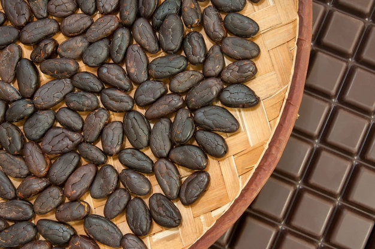
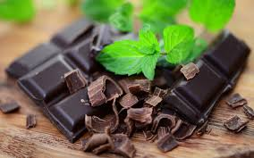
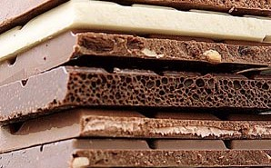
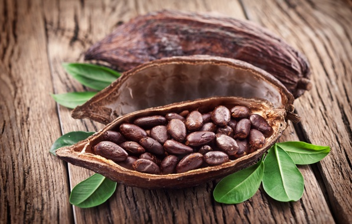
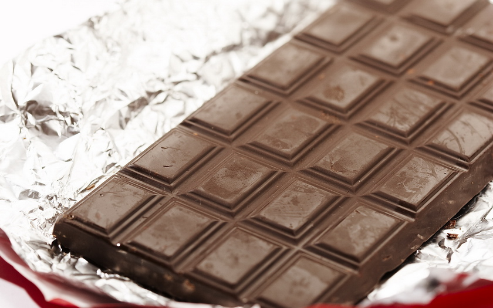

Шоколад доволі звична річ :). Смачний десерт, відкритий ацтеками (хоча слід відмітити,
споживали вони його в дещо іншому вигляді). Особисто для мене назва асоціюється з плиткою, на котрій в
переліку інградієнтів обов'язково вказано какао терте, какао масло та цукор. Хтось може любити, хтось - ні,
хтось надає перевагу цукеркам, хтось любить шоколад з горіхами, проте навряд можна заперечить, що десерт цей
досить відомий.
Страва калорійна, споживання бадьорить, надає сил, особливо коли людина стомлена. Але
давайте розберемось, якого саме смаку - чи то відчуттів - ми чекаємо, коли маємо в руці шматок плитки?
Візьму на себе відповідальність і припущу, що це деяке легке відчуття прохолоди, відчуття гіркоти, що вдало
поєднується з солодким присмаком. І є разюча відмінність між якіcним та неякісним продуктом, що за
властивостями нагадує парафін.
Так от. Далі романтика закінчується. Шоколад - це є суспензія какао тертого в какао
жирі. Обидва ці інградієнти є продуктом переробки какао зерен.
"Справжньому" шоколаду, котрий злегка холодить при таненні в роті, притаманна певна кристалічна структура. Власне, кристалічна структура притаманна какао маслу, хоча для жирів складно ввести поняття кристалічної фази, а лише поняття вмісту твердої фази при заданій температурі. Відчуття прохолоди - саме це відчуття намагаються підсилити кондитери, коли готують всілякі "м'ятні" різновиди шоколаду - забезпечує саме процес плавлення кристалу. І відбувається це, відмітьте, при певній температурі.
"Справжньому" шоколаду, котрий злегка холодить при таненні в роті, притаманна певна кристалічна структура. Власне, кристалічна структура притаманна какао маслу, хоча для жирів складно ввести поняття кристалічної фази, а лише поняття вмісту твердої фази при заданій температурі. Відчуття прохолоди - саме це відчуття намагаються підсилити кондитери, коли готують всілякі "м'ятні" різновиди шоколаду - забезпечує саме процес плавлення кристалу. І відбувається це, відмітьте, при певній температурі.


Існує шість поліморфних кристалічних модифікацій какао масла. Від модифікації залежатиме
температура плавлення шоколаду: діапазон для різних модифікацій складає від 180С до
360С. Якісний шоколад має температуру плавлення 320-330C. Порушивши
технологічний процес, можна з тих самих продуктів отримати рідкий шоколад, плитку елітного шоколаду або
дешевий продукт, що тягнеться в роті, ніби віск.
Розмір частинок какао тертого, так само як і кристаликів цукру, в суспензії під назвою
"шоколад" також важливий. Справа в тому, що гладким і тягучим продукт відчуватиметься в роті лише в тому
разі, якщо його складові за розміром менші 35мкм. Тому бажано, щоб "грубих" частинок - більше вказаного
розміру - було не більше 5%. Інакше на смак будемо відчувати "шершавість".
Білий шоколад не містить какао тертого, лише какао масло.
Білий шоколад не містить какао тертого, лише какао масло.


Часом на поверхні шоколадної плитки чи цукерки можна бачити посивіння: шоколад виглядає
ніби присипаний борошном. Нетоварний вигляд продукту не має жодного відношення до плясняви: оскільки в
шоколаді відсутня вільна волога, ця біда всіх продуктів оминула наш десерт сторою те, що називається,за
визначення. Посивіння є результатом перекристалізації какао масла на поверхні плитки, наприклад, під дією
жирів начинки. Або ж може спричинитися через порушення умов зберігання продукту. Метастабільна кристалічна
форма какао масла переходить в стабільну "тугоплавку" форму.